مستعرض و قارئ الذكر الحكيم
تطبيق متكامل لقراءة القرآن الكريم. يدعم 4 روايات معتمدة وأكثر من 13 قارئاً مع تظليل آية متزامن مع التلاوة وبحث عربي ذكي بتطبيع كامل للهمزات والتشكيل.
تجربة كاملة لقراءة القرآن الكريم على كل المنصات بكود واحد موحَّد
ورش (الافتراضية)، حفص، قالون، الدوري — جميعها من api.alquran.cloud مع تخزين محلي.
العفاسي، الحصري، المنشاوي، عبد الباسط، إبراهيم الدوسري، ياسين الجزائري وغيرهم — صوت لكل آية.
نقرة لتظليل، نقرتان للتشغيل. تتابع تلقائي للآيات والصفحات بفجوة أقل من 200ms.
"الرحمن" تطابق "ٱلرَّحْمَٰنِ". مراجع آيات (2:255)، أسماء سور، كنى (الكرسي، قلب القرآن).
ذهبي (الافتراضية)، ليلي، نهاري، سيبيا، تلقائي يتبع نظام التشغيل.
عثماني (مصحف المدينة)، أميري، أميري ملوّن، ArbFONTS، خط النظام، مسطر.
PWA مع Workbox و5 استراتيجيات للـ caching. تنزيل النصوص والصوت والصور للعمل دون إنترنت.
إخفاء كل الأدوات للقراءة المركَّزة. شريط عائم يختفي تلقائياً بعد 3 ثوان من الخمول.
يعمل على الهاتف والجهاز اللوحي والحاسوب. واجهة موحّدة بتجربة متناسقة على كل المنصات.
🔖 احفظ آية مرئية، 📖 ارجع إليها لاحقاً، 🗑️ احذف العلامة — زر ذكي يتبدّل بثلاث حالات حسب السياق. مستقلة تماماً عن موضع الاستماع.
آخر آية كنت تستمع إليها تُحفظ تلقائياً. عند العودة، حوار "متابعة من حيث توقفت / بدء السورة من أوّلها" يظهر بنفس نمط البرنامج.
حتى لو أخذك الصوت لصفحة 30، عند إعادة فتح التطبيق تعود تلقائياً إلى آخر صفحة كنت تقرأ فيها يدوياً — لا تفقد موضعك أبداً.
على الهاتف اللوحي والجوّال: اسحب يميناً للصفحة السابقة، يساراً للتالية. زر احتياطي 📄 في الشريط العائم لو فضّلت الأزرار.
على شاشة اللمس: باعد إصبعيك لتكبير الخط، قرّبهما للتصغير. خطوات 5% بين 80% و200%. زر بديل خخ في الشريط العائم.
شريط مرن دقيق (0-100% بخطوات 5%) في قائمة "المزيد" ⋯ — مع أزرار 🔉/🔊 ونسبة مرئية. يُحفظ بين الجلسات.
من زر ⋯ صل بسرعة إلى: السور · البحث · الرواية · القارئ · الخط (بمعاينة حية) · علامة القراءة · حجم الخط · مستوى الصوت — كلها مكان واحد.
يخفي كل الأدوات لقراءة بلا تشتيت. الشريط العائم نفسه يتلاشى بعد 3 ثوان من الخمول ويظهر بأي حركة.
جدول يعرض كل ما تم تنزيله محلياً (نصوص + صوت + صور) بحجم تقريبي + زر حذف لكل قسم + زر مسح شامل. حوارات تأكيد متّسقة مع السمة.
لا تتبّع، لا إعلانات، لا تحليلات، لا حسابات. كل البيانات محلية على جهازك (localStorage + IndexedDB + Cache API). مفتوح المصدر بالكامل.
ترخيص مزدوج: GPL-3.0 لسطح المكتب، AGPL-3.0 للويب. المصدر الكامل متاح للتعديل والمساهمة. صدقة جارية لكل مَن شارك.
جوّل بين المزايا والسمات الخمس + الـ modals + الهاتف واللوحي
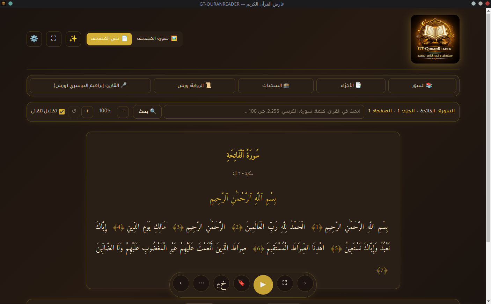
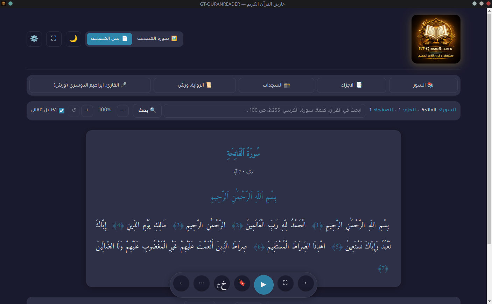
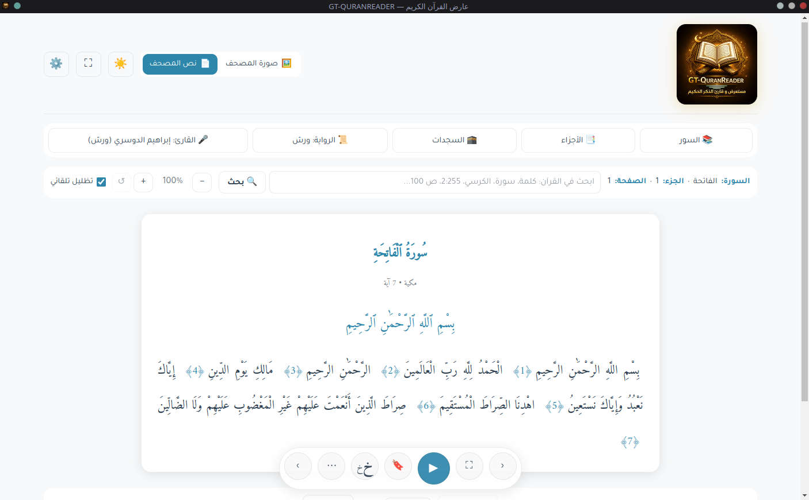
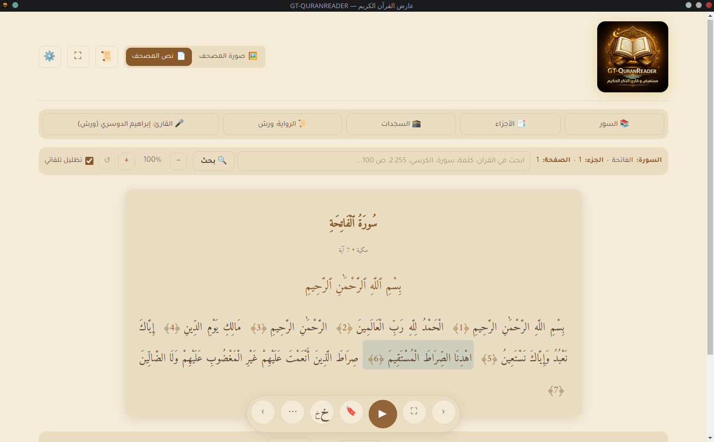
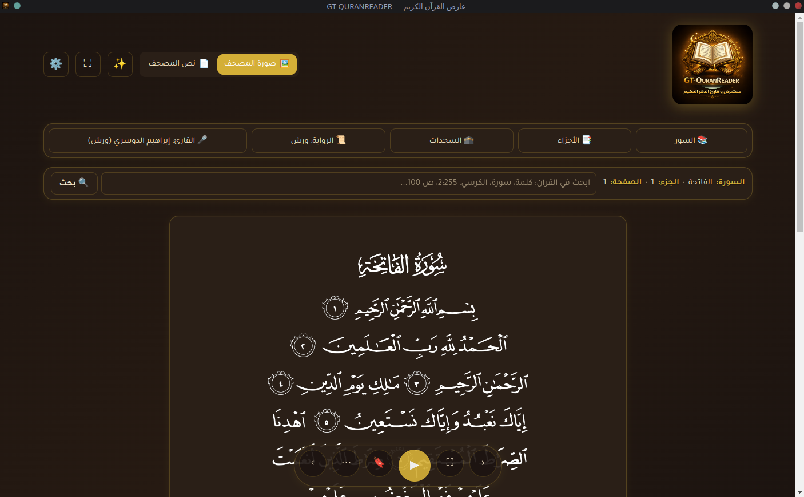
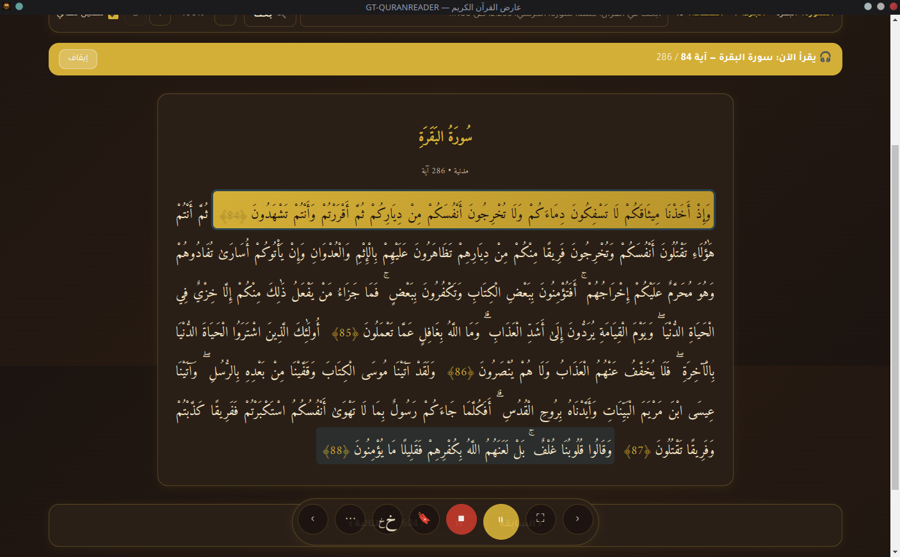
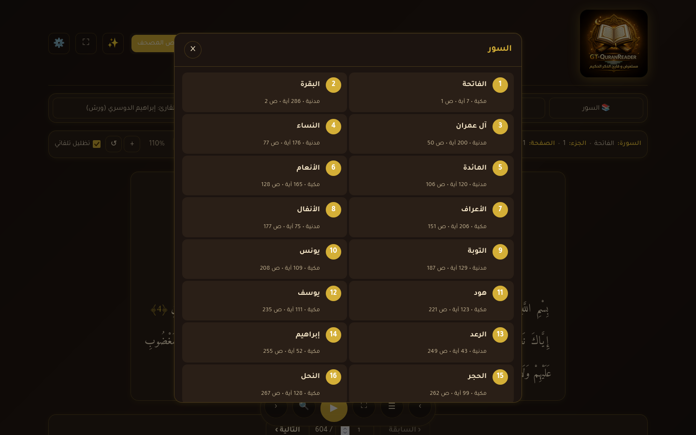
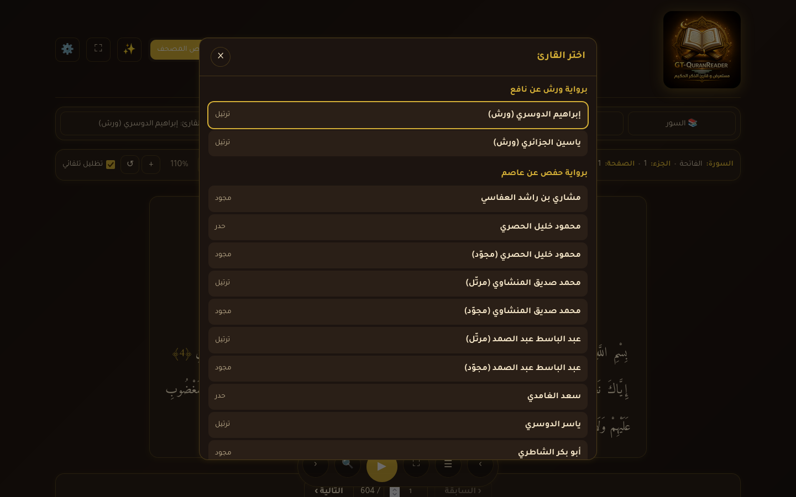
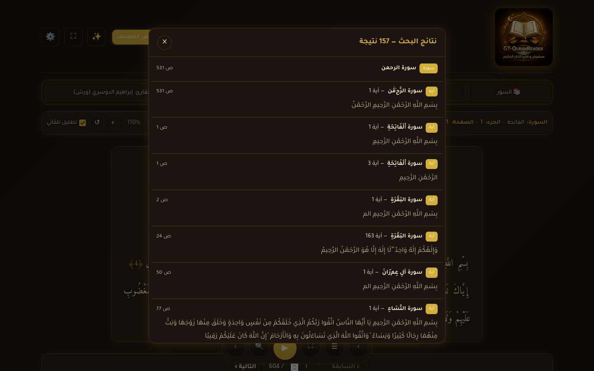
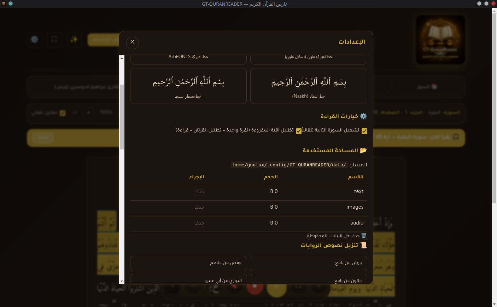
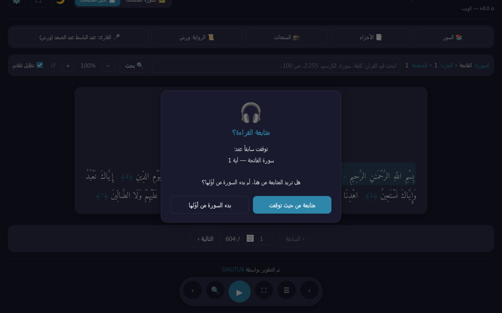
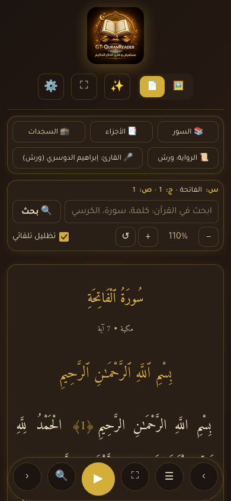
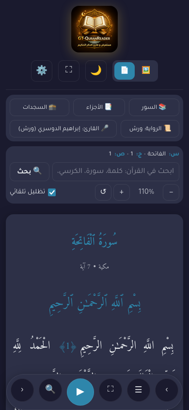
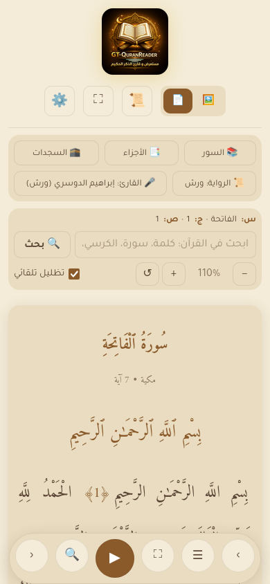
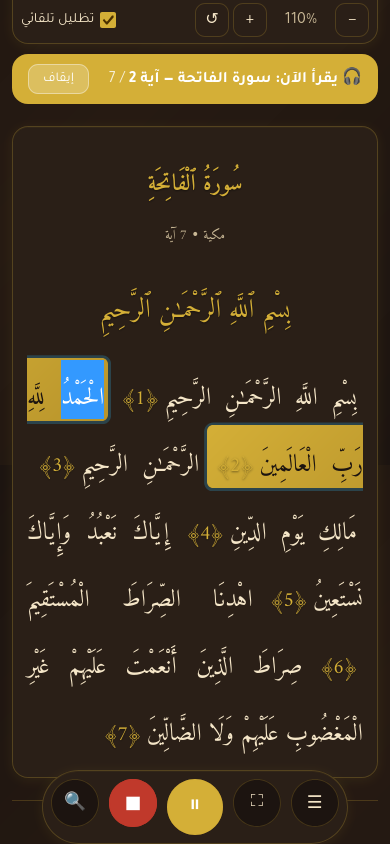
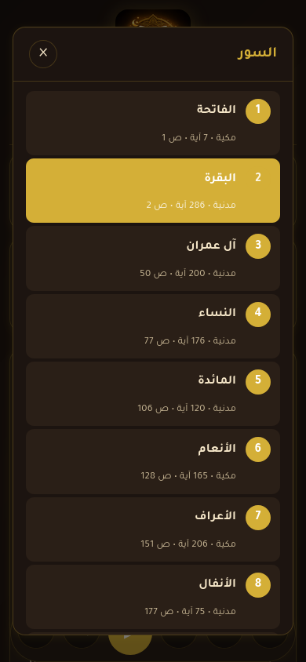
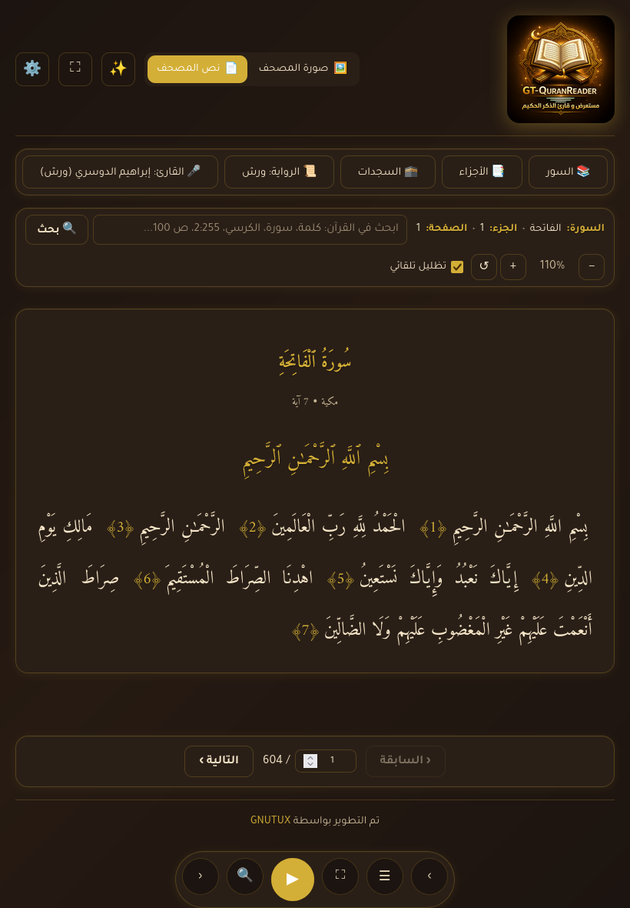
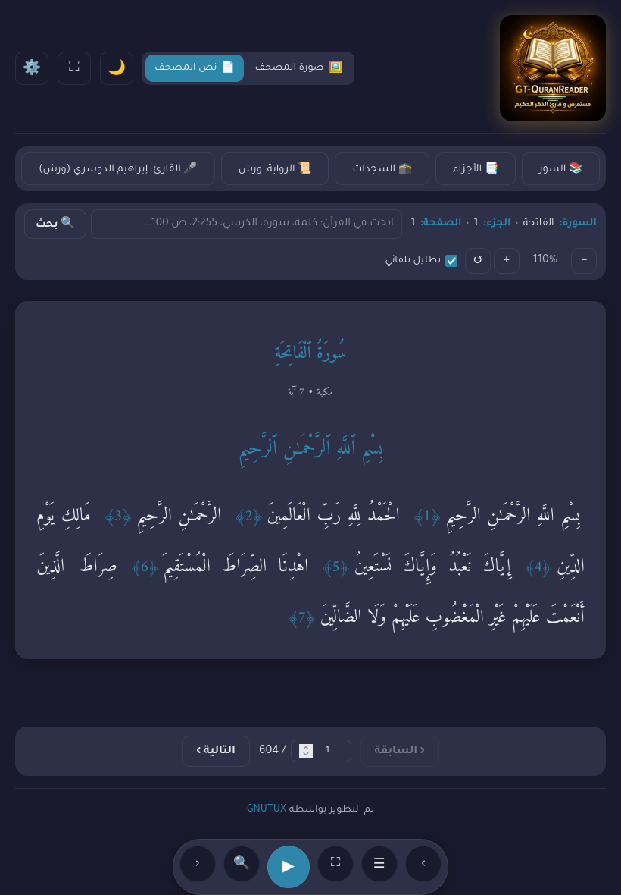
حزم جاهزة لمعظم منصات GNU/Linux و Android — نفس التجربة على كل المنصات
محمول — يعمل على كل توزيعات GNU/Linux دون تثبيت
Debian · Ubuntu · Mint · Pop!_OS · MX GNU/Linux
Fedora · RHEL · openSUSE · CentOS Stream
معزول وآمن — يعمل على كل توزيعات GNU/Linux
للهواتف اللوحية والجوّالة — API 22 فأعلى
النسخة الحالية — يعمل في أي متصفح حديث + قابل للتثبيت كتطبيق
Vanilla JS — متاحة على المستودع القديم بدون حذف
chmod +x GT-QURANREADER-4.0.1-x86_64.AppImage && ./GT-QURANREADER-4.0.1-x86_64.AppImage
sudo dpkg -i GT-QURANREADER-4.0.1-amd64.deb
sudo dnf install ./GT-QURANREADER-4.0.1-x86_64.rpm
flatpak install --user GT-QURANREADER-4.0.1.flatpak
adb install -r GT-QURANREADER-4.0.1-release.apk
GT-QuranReader هو تطبيق حر مفتوح المصدر لقراءة القرآن الكريم، مبني بـ React + TypeScript ويعمل عبر Electron على سطح المكتب، و PWA على المتصفح، و Capacitor على أندرويد و iOS. كل ذلك من قاعدة كود واحدة موحَّدة (monorepo).
GPL-3.0 لنواة سطح المكتب و AGPL-3.0 لنسخة الويب — لضمان حرية المستخدمين على الخوادم.
مشروع غير ربحي. الكود متاح للاستخدام والتعديل والمساهمة — اللهم اجعله صدقة جارية.
النص من api.alquran.cloud، الصوت من everyayah.com،
صور الصفحات من مستودع Quran-PNG.
لا تتبّع، لا إعلانات، لا تحليلات. كل البيانات محلية (localStorage / IndexedDB / userData).